This week we are going to talk about probability and probability distributions as a backdrop for the models that we will be working with during the next several weeks. Probability theory is central to statistical techniques, so it will be important for you to have a pretty firm understanding of this to grab hold of big ideas later on. If you are successful in understanding these concepts, you will have a working body of knowledge that is comparable, or better developed than many leading professionals in our fields.
When we talk about probability distributions, we are talking about theprobability that a ‘random variable’ takes on some value. In most cases, there is a higher probability that a variable will take on certain values than others. That probability may be governed by any number of processes and thus may assume a number of different shapes with respect to the likelihood of any given value of our random variable. The differences in the shapes, and the mathematical ‘parameters’ that we use to describe those shapes are called ‘probability distributions’.
There was a time when biologists were largely restricted to using models that relied heavily on assumptions of normality in the error structure of random variables becuase of how computationally intensive other methods were. This often led to the use of strictly ‘parametric’ tools like ANOVA and t-tests, or the use of strictly ‘non-parametric’ tools like frequency analyses and rank- order methods. While these can still be useful techniques in our toolboxes, that time has passed, and now we have access to a wide range of tools that allow us to extend simple parametric and non-parametric tools to explicitly incorporate mechanisms that allow us to relax or change distributional assumptions. We will discuss these throughout the course, but we need to look at the underlying distributions that govern our decisions about which of these tools to use. So, this week we’ll look at specific distributions that correspond to many of the ‘semi-parametric’ methods that are commonly applied.
We are going to use this tutorial for our discussions about probability and probability distributions throughout the week. Next week, we will use this new information to talk about how we calculate distributional statistics from samples and how those can be used for statistical inference before we begin talking about statistical analyses for the remainder of the course. Hopefully the order of things is starting to make some sense now!
R has a number of built-in distribution types, and there are random-number generators associated with most or all of these that will allow us to take random samples from a distribution. This is useful for data simulation, but is also helpful for us to learn about probability distributions and how their parameters affect the shape, spread, scale, location, etc. of those distributions. We will briefly discuss concepts like ‘skew’ because of how they can help us think about the assumptions that we are making (or breaking!) in the models that we use.
For this class, we will focus on one major family of distributions and then zero in on a few distributions within this family that you are guaranteed to encounter in analyses throughout your career.
Most or all of the distributions we will need for this class come from the ‘exponential’ family of distributions.
The exponential family is VERY flexible. It includes most of the probability distributions with which you are familiar, and many more. Just ask this very reliable Wikipedia entry. Let’s face it, you were going there anyway, I just cut out the Google step.
Take a look at the table at the bottom of this Wikipedia page just to get an idea of how many distributions are included within the exponential! Holy cow! We’re not going to look at all of these in this class- I just want you to be aware that this is a HUGE family of specific distributions.
Distributions that we’ll focus on this week:
The normal distribution
This is one distribution with which most of you have at least some nodding acquaintance.
The normal is defined by two parameters:
The mean (\(\mu\))
The variance (\(\sigma^2\))
Let’s take a look at what the normal distribution looks like. We’ll start with the standard normal (z distribution). The standard normal is a normal distribution with a mean of zero and a variance of 1.
plot(density(
rnorm(n=1e4, mean=0, sd=1)),
main='', lwd=2, col='black',
xlab=expression(theta), ylim=c(0,1))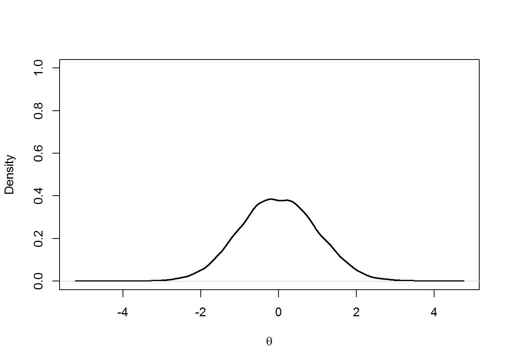
We can change the parameters of the standard normal to increase or decrease the degree of ‘kurtosis’ or peakedness in our distribution. The blue line shows a distribution with lower kurtosis than the z distribution (this one is called a t-distribution). The red line shows a distribution with greater kurtosis than the z distribution.
For line drawings like these, we can just add them to the existing plot to keep the same x and y scales and axes by using the lines function:
plot(density(
rnorm(n=1e4, mean=0, sd=1)),
main='', lwd=2, col='black',
xlab=expression(theta), ylim=c(0,1))
lines(density(
rnorm(n=1e4, mean=0, sd=2)),
lwd=2, col = 'blue')
lines(density(
rnorm(n=1e4, mean=0, sd=.5)),
lwd=2, col = 'red') 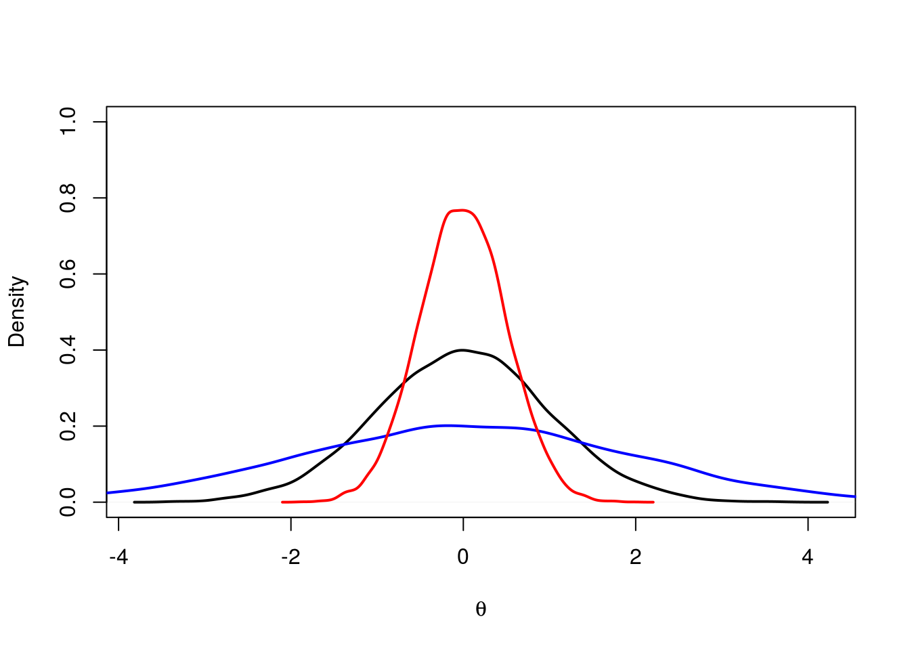
We can add a legend to clarify:
plot(density(
rnorm(n=1e4, mean=0, sd=1)),
main='', lwd=2, col='black',
xlab=expression(theta), ylim=c(0,1))
lines(density(
rnorm(n=1e4, mean=0, sd=2)),
lwd=2, col = 'blue')
lines(density(
rnorm(n=1e4, mean=0, sd=.5)),
lwd=2, col = 'red')
legend(x=1, # x-coordinate for legend
y=.9,# Y-coordinate for legend
legend=c('mu=0, sd=1', 'mu=0, sd=2', 'mu=0, sd=.5'), # Names
col=c('black', 'blue', 'red'), # Colors
lty=1, # Line type for legend symbols
lwd=2, # Line width for legend symbols
bg='n', # Legend fill: none
bty='n' # Box type for legend: none
) # Close call to legend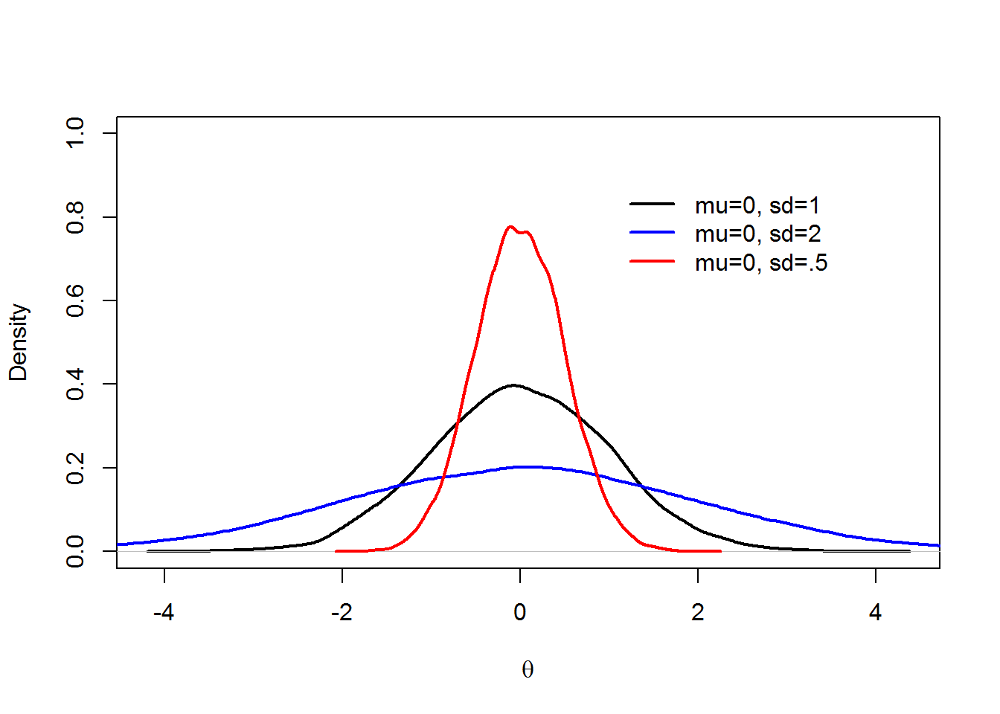
The lognormal distribution
The lognormal distribution is a probability distribution that assumes our random variable is normally distributed on the log scale. This assumption allows us to incorporate ‘skew’ into the normal distribution and change the location and spread of the normal distribution by transforming the parameters (\(\mu\) and \(\sigma\)) onto the log scale. This is one of the more common data transformations that you will run into, e.g.: “We used a log-10 transformation to normalize the variable prior to analysis…”
Let’s take a look at how changes to the mean change the location of this distribution:
# Plot the density fucntion for a lognormal
# distribution that has a mean of zero and
# a standard deviation of 1.
plot(density(
rlnorm(n=1e4, mean=0, sd=1)),
main='', lwd=2, col='black',
xlab=expression(theta), ylim=c(0,1))
# Now, we can change the parameters to change the location and spread
lines(density(
rlnorm(n=1e4, mean=1, sd=1)),
lwd=2, col = 'blue')
lines(density(
rlnorm(n=1e4, mean=2, sd=1)),
lwd=2, col = 'red')
# Add a legend to the plot
legend(x=20, y=.9,
legend=c('mu=0, sd=1', 'mu=1, sd=1', 'mu=2, sd=1'),
col=c('black', 'blue', 'red'),
lty=1, lwd=2, bg='n', bty='n')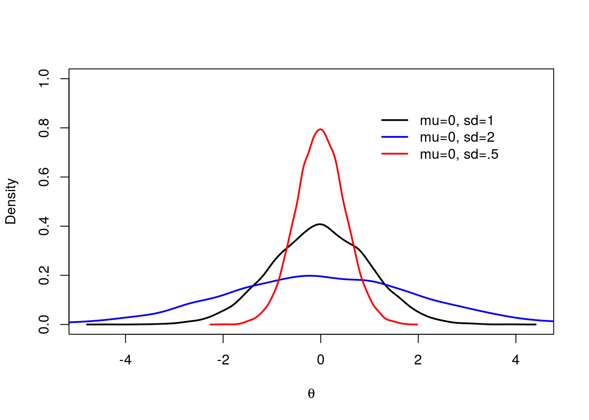
The beta distribution
The beta distribution is a probability distribution that is constrained to the interval (0, 1). But, it is incredibly flexible in its parameterization, and as a result is very useful for stochastic simulation of variables on the probability scale, such as survival.
The parameters of the beta distribution are \(\alpha\) and \(\beta\), or commonly ‘a’ and ‘b’. Within this distribution, \(\alpha\) pushes the distribution to the right (toward 1), and \(\beta\) pushes the distribution to the left (toward 0). The relative magnitude of \(\alpha\) and \(\beta\) determine the location, shape, and spread of the probability distribution for our random variable. When \(\alpha\) and \(\beta\) are equal, the beta distribution is a t-distribution within the interval (0, 1).
Let’s take a look:
# Within the rbeta function in R, 'a' is called 'shape1' and 'b' is called
# 'shape2'
plot(density(rbeta(n=1e4, shape1=50, shape2=50)), main='', lwd=2,
col='black', xlab=expression(theta), ylim=c(0,50), xlim=c(0,1))
# Now, we can change the parameters to change the location and spread
lines(density(rbeta(n=1e4, shape1=50, shape2=100)), lwd=2, col = 'blue')
lines(density(rbeta(n=1e4, shape1=500, shape2=250)), lwd=2, col = 'red')
# Add a legend to the plot
legend(x=.65, y=50, legend=c('a=50, b=50', 'a=50, b=100', 'a=500, b=250'),
col=c('black', 'blue', 'red'), lty=1, lwd=2, bg='n', bty='n') 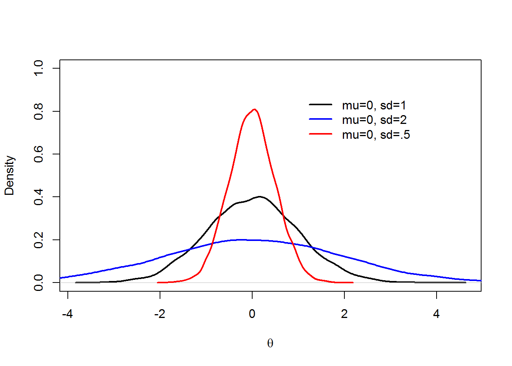
Discrete probability distributions are useful for situations in which our random variable of interest can only take specific values within the interval of interest. For example, this might include age, counts, pass/fail, or any number of conceivable categories. As a result, these require a slightly different treatment of probability as a discrete, rather than continuous phenomenon.
The Bernoulli distribution
The Bernoulli distribution is a special case of the binomial distribution with a single trial (see below for clarification). Bernoulli outcomes are those for which the random variable can take on one of two values: a one or a zero. This distribution is useful for visualizing processes such as coin flips, yes/no responses, live/dead endpoints, and a number of other very interesting phenomena. The Bernoulli distribution has a single parameter: the probability of success, but is also governed by sample size: n.
We can simulate data from a Bernoulli distribution in one of two ways in R
The ‘old-school’ way of doing this was to draw from a binomial with a single ‘trial’. Here we randomly draw a single sample from a binomial with a single trial, and a probability of success of 50%. This can be likened to flipping a fair coin.
rbinom(n=1, size=1, prob=.5)## [1] 0But now, there is a function in the Rlab package that simplifies this for the specific case of a Bernoulli.
# First, install the necessary package
#install.packages('Rlab') # Uncomment to install
library(Rlab)
# Now we can take a random sample from a Bernouli
# Flip the coin once
rbern(n=1, prob=.5)## [1] 0 # Flip the coin 100 times
rbern(n=100, prob=.5)## [1] 1 1 0 0 1 0 1 0 0 0 1 1 0 0 0 0 0 1 0 0 0 1 1 1 1 1 0 0 1 0 1 1 1 1 0
## [36] 1 0 0 1 0 0 0 1 0 1 0 0 0 0 0 1 1 1 0 0 1 0 0 0 1 1 0 0 0 1 1 0 0 1 0
## [71] 0 1 0 0 1 1 0 1 1 1 0 0 0 0 0 1 0 0 0 0 1 1 0 1 1 1 1 0 0 0The binomial distribution
The binomial distribution is pretty similar to the Bernoulli distribution except that it also includes a parameter called ‘size’ which corresponds to a number of trials. In most cases in biology, it will suffice to use the Bernoulli, but for modeling we will want to understand the binomial for things like random stratified designs and nested models that rely on the use of binomial distribution
To sample data from a binomial distribution, we can use rbinom. In this example we tell R that we want 10 samples (n) from a binomial distribution that has 10 trials (size) and a probability of success (prob) of 0.5. This is like having 10 people flip the coin 10 times instead of just one person flipping the coin 100 times.
# Take a random draw of 10 samples from a binomial distribution with 10 trials
# and probability of success equal to 0.50
rbinom(n=10, size=10, prob=0.5)## [1] 6 7 2 3 1 5 4 5 5 6The multinomial distribution
The multinomial distribution is a further generalization of the Binomial and Bernoulli distribution. Here, there are one or more possible categorical outcomes, and the probability of each one occuring is specified individually but all of them must sum to one. The categories are, in this case, assumed to be a mutually exclusive and exhaustive set of possible outcomes.
We can use the multinomial distribution to randomly sample from categories (imagine our response variable is a categorical variable, like the names of the students in this class). To do this:
# First, we make a vector of names:
name = c('Byron', 'Connor', 'Emma E.', 'Emma T', 'Jess', 'Kathleen',
'Kelly', 'Melissa', 'Nshyira','Ryan', 'Tia')
# Then, we assign a uniform probability of drawing any given name if they
# can all be drawn with equal frequency:
probs = rep(x=1/length(name), times=length(name))
probs ## [1] 0.09090909 0.09090909 0.09090909 0.09090909 0.09090909 0.09090909
## [7] 0.09090909 0.09090909 0.09090909 0.09090909 0.09090909Now, we can sample from a multinomial distribution using our objects. Here we are taking 5 samples from the distribution, each time we sample there is only one trial, and we are sampling the 8 probabilities above.
rmultinom(n=5, size=1, prob=probs)## [,1] [,2] [,3] [,4] [,5]
## [1,] 0 0 0 0 0
## [2,] 0 0 0 0 0
## [3,] 0 0 0 0 0
## [4,] 0 0 0 1 0
## [5,] 0 0 0 0 0
## [6,] 0 0 1 0 1
## [7,] 0 1 0 0 0
## [8,] 0 0 0 0 0
## [9,] 0 0 0 0 0
## [10,] 1 0 0 0 0
## [11,] 0 0 0 0 0WHOA a matrix??!!! HOLY CRAP, WHAT DOES IT ALL MEAN?
Take a step back and think about this. The rows in this matrix are you and your classmates. If we took one random sample from the multinomial distribution, it would look like this:
# Take a single sample from the list of student names
rmultinom(n=1, size=1, prob=probs)## [,1]
## [1,] 0
## [2,] 0
## [3,] 0
## [4,] 0
## [5,] 0
## [6,] 0
## [7,] 0
## [8,] 1
## [9,] 0
## [10,] 0
## [11,] 0Here, we pulled a single sample from the distribution, and probability of sampling a given individual was 0.09 (1/11). If it makes it easier, we can put your names next to it:
cbind(name, rmultinom(n=1, size=1, prob=probs))## name
## [1,] "Byron" "0"
## [2,] "Connor" "0"
## [3,] "Emma E." "0"
## [4,] "Emma T" "0"
## [5,] "Jess" "0"
## [6,] "Kathleen" "0"
## [7,] "Kelly" "0"
## [8,] "Melissa" "0"
## [9,] "Nshyira" "1"
## [10,] "Ryan" "0"
## [11,] "Tia" "0"Now, if I was calling on you randomly in class, after 10 questions, the spread of people who have participated in class might look like this:
cbind(name, rmultinom(n=10, size=1, prob=probs))## name
## [1,] "Byron" "0" "0" "0" "0" "0" "0" "0" "0" "0" "0"
## [2,] "Connor" "0" "0" "0" "0" "0" "0" "0" "0" "0" "0"
## [3,] "Emma E." "0" "0" "1" "0" "0" "0" "0" "0" "1" "0"
## [4,] "Emma T" "0" "1" "0" "0" "0" "0" "1" "0" "0" "0"
## [5,] "Jess" "0" "0" "0" "0" "0" "0" "0" "0" "0" "1"
## [6,] "Kathleen" "0" "0" "0" "0" "0" "0" "0" "0" "0" "0"
## [7,] "Kelly" "0" "0" "0" "0" "0" "0" "0" "0" "0" "0"
## [8,] "Melissa" "0" "0" "0" "0" "1" "0" "0" "1" "0" "0"
## [9,] "Nshyira" "0" "0" "0" "0" "0" "1" "0" "0" "0" "0"
## [10,] "Ryan" "1" "0" "0" "1" "0" "0" "0" "0" "0" "0"
## [11,] "Tia" "0" "0" "0" "0" "0" "0" "0" "0" "0" "0"Taking this one step further, we could just draw a name and stop looking at these ugly (no but really they are awesome!) matrices:
name[which(rmultinom(n=1, size=1, prob=probs)>0)]## [1] "Byron"And now we have a way to randomly select an individual based on a multinomial distribution!
The Poisson distribution
The Poisson distribution is used for counts or other integer data. This distribution is widely used (and just as widely misused!) for its ability to account for a large number of biological and ecological processes in the models that we will discuss this semester. The Poisson distribution has a single parameter, \(\lambda\), which is both the mean and the variance of the distribution. So, despite its utility, the distribution is relatively inflexible with respect to shape and spread. Fun fact: this distribution was originally worked out by a French mathematician to predict the number of soldiers who were accidentally killed from being kicked by horses.
Take a look at how the distribution changes when we change \(\lambda\), and you will get an idea of how this one works.
hist(rpois(n=1e4, lambda=100), main='')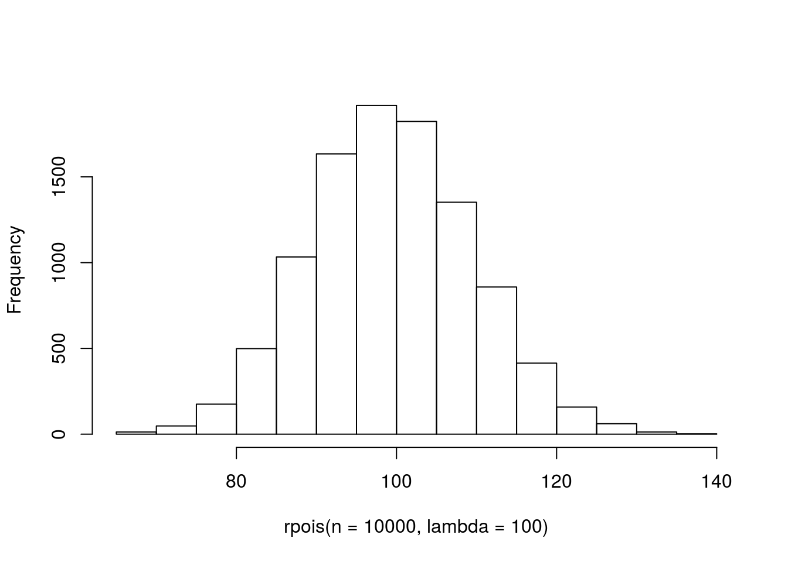
hist(rpois(n=1e4, lambda=1000), main='') 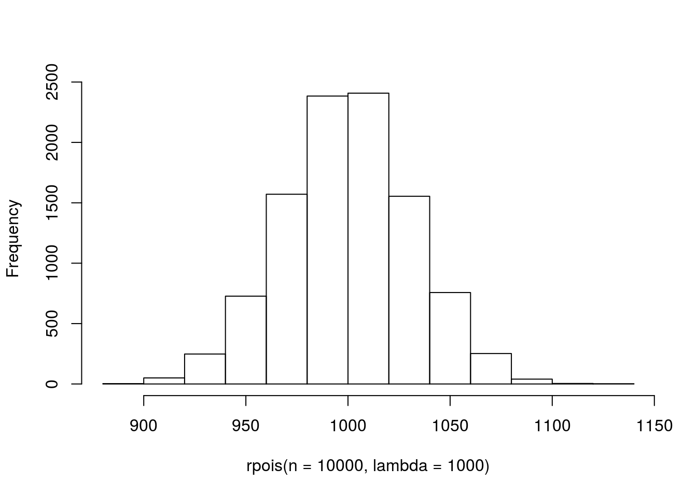
hist(rpois(n=1e4, lambda=10000), main='') 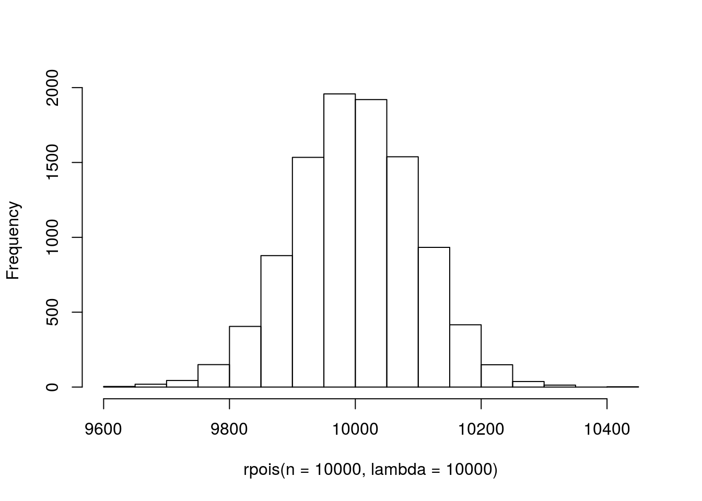
The negative binomial distribution
Okay, this one can be a little difficult to wrap your head around but it’s an important one for us to know about. So, we will spend a little extra time setting this one up to try and be clear. Often, folks start out thinking that they’re going to use a Poisson distribution and they end up collecting with data that do not conform to the relative inflexibility of that single- parameter distribution. For the purpose of this class, we are not going to dive into the mechanics of the negative binomial distribution, but we do need to know what it looks like and why we might need it.
One useful way to conceptualize the negative binomial is ‘how long does it take for some event to occur?’ For example, we might ask how long it takes a fish to start migrating, how long it takes a sea turtle to recover in a rehabilitation center, how long it will take for a terminal patient to expire, or how frequently we see the expression of a gene of interest. These kinds of questions are asked in aptly named ‘time-to-event’ models that rely on the variance structure of the negative binomial. In the context of these kinds of questions, the negative binomial is a discrete probability distribution (and not a continuous distribution) because the ‘time’ components of the distribution is actually a series of independent Bernoulli trials (holy crap!). For example: if we want to know how many days it will take for a turtle to recover, what we are really doing is asking on each day until recovery, ‘Is today the day?’. Then, we flip a coin and find out. So, each day in this example is a Bernoulli trial. Another way to think about this is the number of failures occurring in a sequence before a target number of sucesses is achieved.
For the classical parameterization:
We will start with looking at how many failures are observed before one success in a sequence of Bernoulli trials.
With probability of succes equal to .95, it doesn’t take long and most of the probability mass is on zero, with a couple of stragglers further out.
hist(rnbinom(1e4, size=1, prob=.95))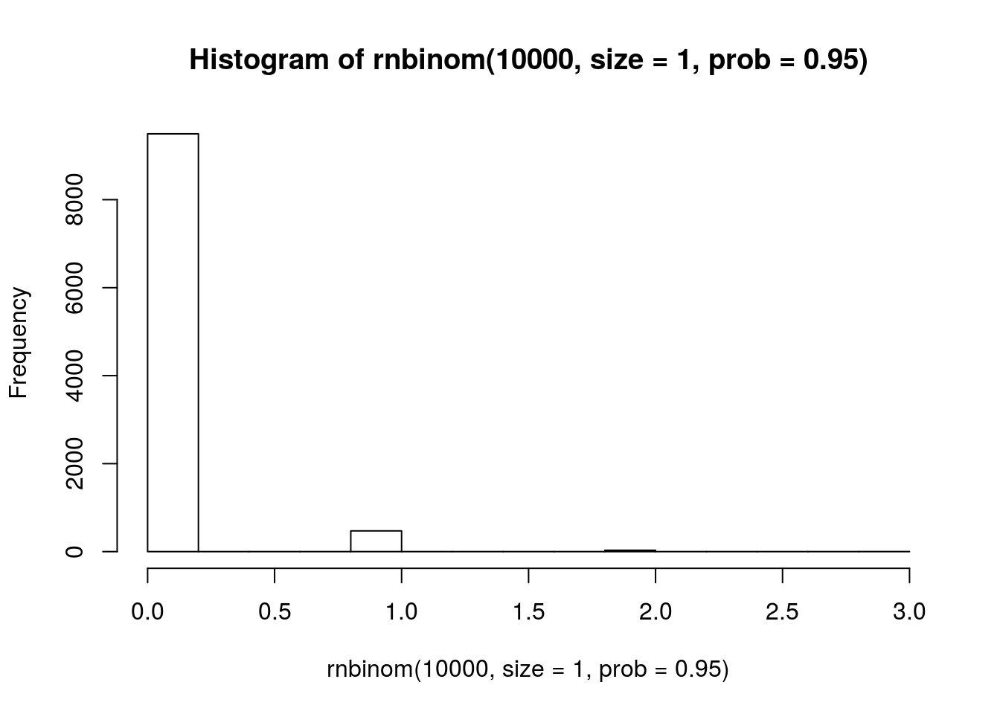
If we decrease probability of success in each trial to 0.25, we see more failures on average before we reach success. Most of the time, it still takes less than 5 trials to reach a success, but some times it takes much longer.
hist(rnbinom(1e4, size=1, prob=.25))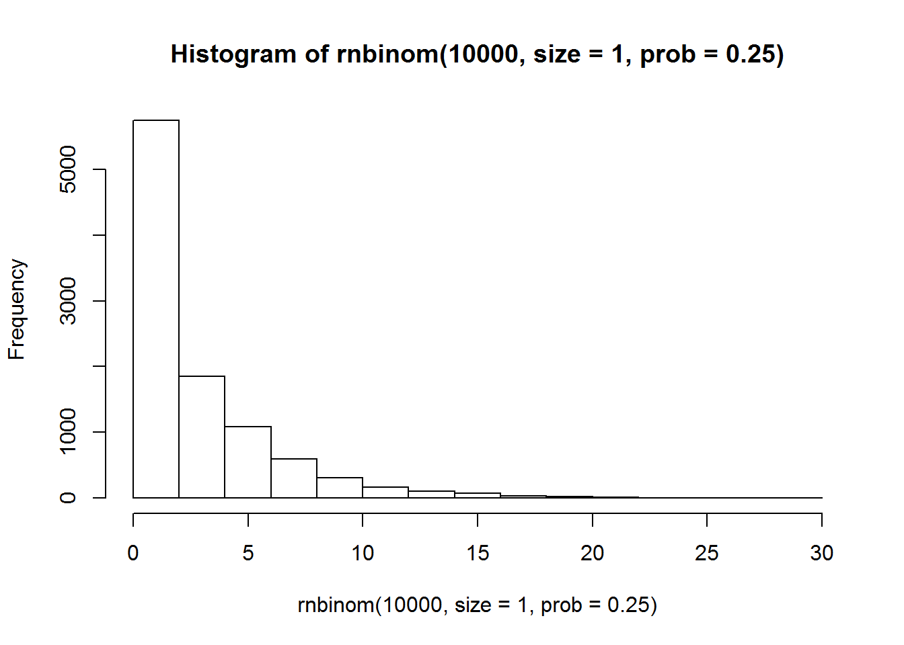
And, if we increase the number of successes that we use for our criterion, or target, then it spreads the distribution out even further.
hist(rnbinom(1e4, size=10, prob=.25)) 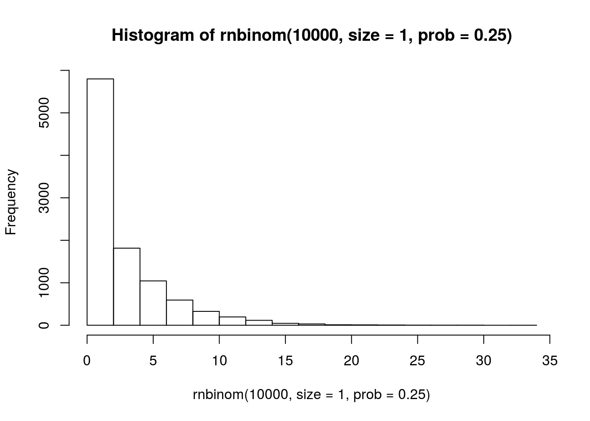
Now, because of it’s properties, the negative binomial is also useful for number of other applications. Specifically, it has been widely used to represent Poisson-like processes in which the mean and variance are not equal (e.g., overdispersion). This has seen a lot of application in the field of ecology, especially for overdispersed count data.
Here, we sample 10k random draws from a distribution with a mean of 10 and an overdispersion parameter of 1. The overdispersion parameter is called ‘size’ because this is an alternative parameterization that is just making use of the relationships between existing parameters of the negative binomial. It’s easy to grasp how the mean changes the location of the distribution.
hist(rnbinom(1e4, mu=10, size=1))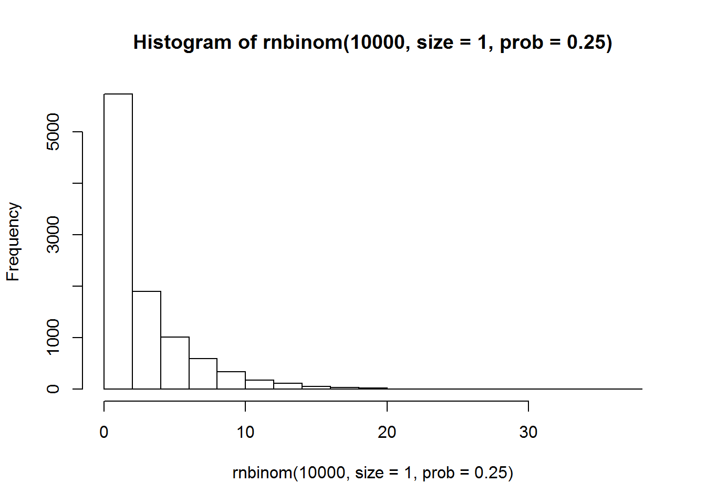
But, note how the overdispersion parameter changes things:
hist(rnbinom(1e4, mu=10, size=.1)) 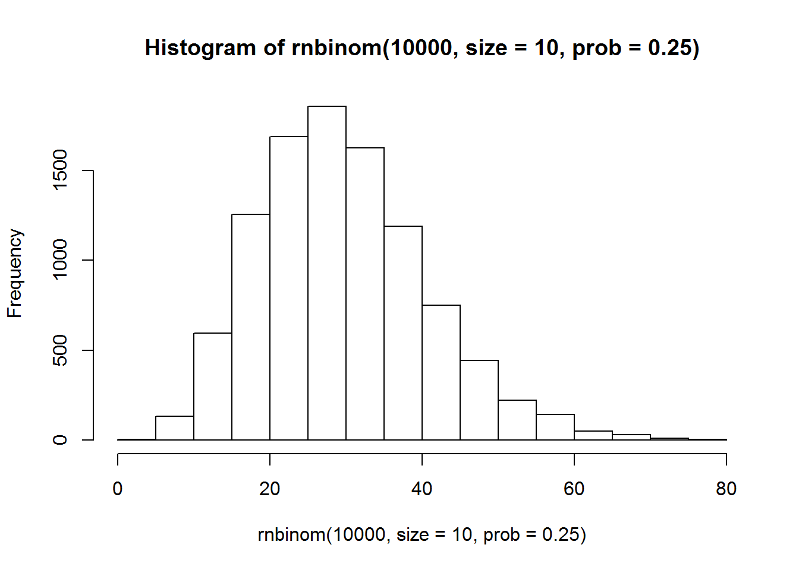
hist(rnbinom(1e4, mu=10, size=10))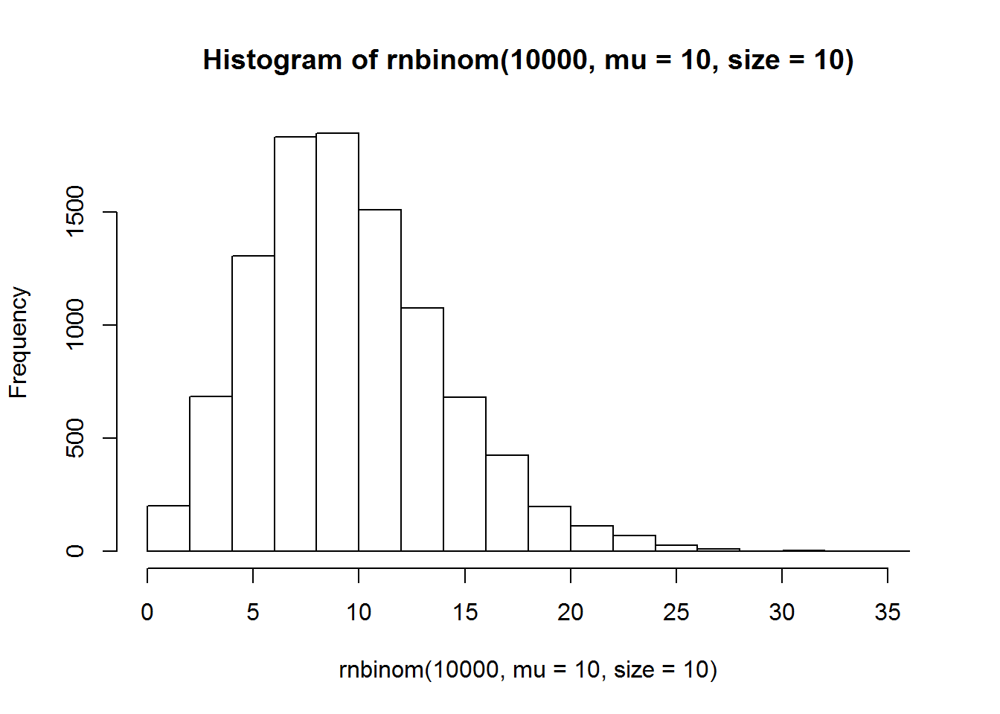
hist(rnbinom(1e4, mu=10, size=100)) 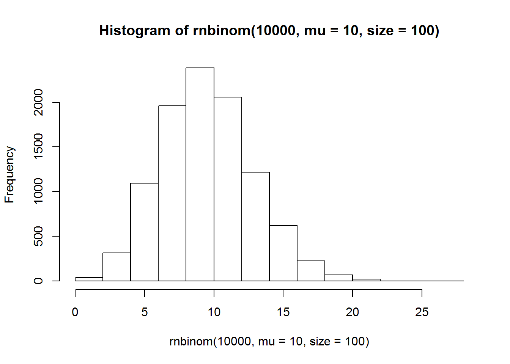
hist(rnbinom(1e4, mu=10, size=1000)) A more intuitive way to work with the negative binomial in R is by using the MASS package. In this parameterization, we use the mean and the dispersion parameter explicitly so it makes more sense:
# MASS comes pre-installed as part of base software
library(MASS)
hist(rnegbin(1e4, mu=10, theta = .1)) 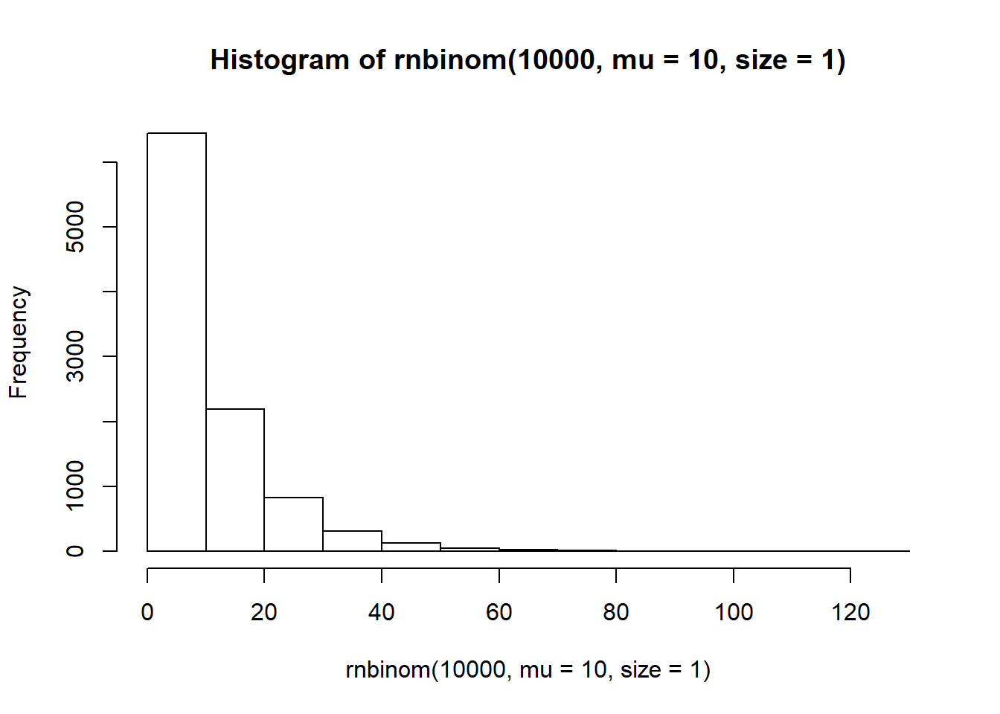
hist(rnegbin(1e4, mu=10, theta = 10)) 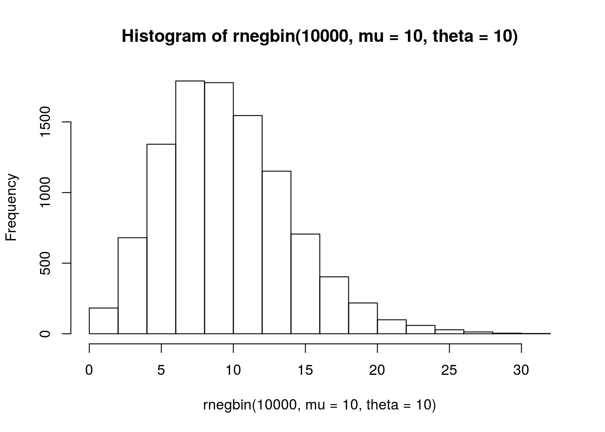
hist(rnegbin(1e4, mu=10, theta = 100)) 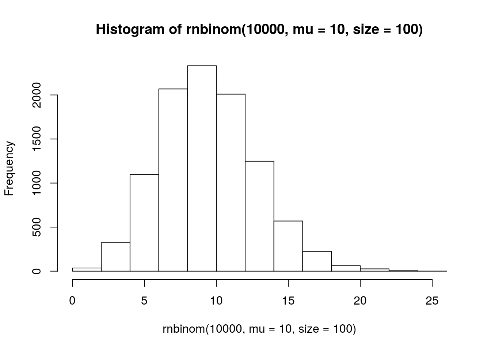
hist(rnegbin(1e4, mu=10, theta = 1000)) 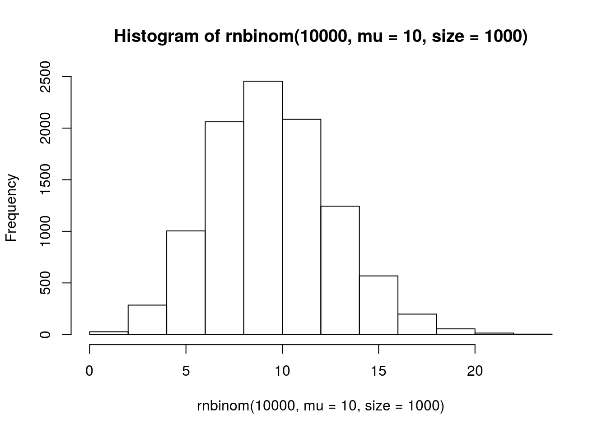
NOTE that the results are pretty much identical.
In this section, we will learn how to derive the parameters of the normal distribution using a few different methods in R. We will use this opportunity to re-introduce the parameters as ‘moments’ of the distribution so we can talk about what we mean by ‘confidence intervals’. We also will introduce a couple of different methods for calculating ‘moments’ of a distribution. Specifically, we will look at how to derive…
Sounds fancy, huh?
The tools demonstrated below can be used for most of the probability distributions that have been implemented in R, and we could go on and on forever about them. But, for the sake of our collective sanity we will walk through the tools available using the normal distribution alone, although I encourage you to explore others as applicable to the work that you are doing!
Method of moments estimator
See if you can rearrange this in a way that makes sense with how you know to calculate an ‘average’ and a variance!
First, we’ll estimate it by making our own function:
# Make up a vector of data to test this on
test_norm = rnorm(1e3, 0, 1)
# Write the function
norm.mom = function(x){ # Define a function by name
x_bar = (1/length(x)) * sum(x) # Calculate mean
sigma2 = (1/length(x)) * sum((x-x_bar)^2) # Calculate variance
return(c(x_bar, sigma2)) # Return the calculations
}
# Test the function
norm.mom(test_norm)## [1] -0.04135066 0.98475546Because this one is so common, R has built-in estimators that rely on the exact solution provided by the formulas for the first two moments of the normal distribution:
mean(test_norm)## [1] -0.04135066 var(test_norm)## [1] 0.9857412How do these compare to the answers returned by our function?
Maximum likelihood estimator
R has built-in maximum likelihood estimators that provide an exact solution to the first two moments of the normal distribution.
library(MASS)
fitdistr(test_norm, 'normal')## mean sd
## -0.04135066 0.99234846
## ( 0.03138081) ( 0.02218959)Only one problem here: R doesn’t report the second moment! It reports the square root of the second moment: the standard deviation!! What the crap is that all about?
Finally, let’s write our own function and maximize the likelihood with the optim() function in R.
# Define the function
normal.lik = function(theta, y){
# The starting value for mu that we provide
mu = theta[1]
# The starting value for sigma2 that we provide
sigma2 = theta[2]
# Number of observations in the data
n = nrow(y)
# Compute the log likelihood of the data (y) using the likelihood
# function for the normal distribution given the starting values for our
# parameters (contained in the vector 'theta')
logl = -.5*n*log(2*pi) -.5*n*log(sigma2)-(1/(2*sigma2))*sum((y-mu)**2)
return(-logl)
}Now, we use the optim function to maximize the likelihood of the data (technically by minimizing the -log likehood) given different values of our parameters (mu and sigma2).
optim(c(0, 1), normal.lik, y=data.frame(test_norm))## $par
## [1] -0.04154948 0.98491167
##
## $value
## [1] 1411.258
##
## $counts
## function gradient
## 41 NA
##
## $convergence
## [1] 0
##
## $message
## NULLWe can also make this into an object and call the parts by name:
# Make it into an object
est = optim(c(0, 1), normal.lik, y=data.frame(test_norm))
# Look at the structure
str(est) # I'll be damned, it's a list! Hey, we learned about those!## List of 5
## $ par : num [1:2] -0.0415 0.9849
## $ value : num 1411
## $ counts : Named int [1:2] 41 NA
## ..- attr(*, "names")= chr [1:2] "function" "gradient"
## $ convergence: int 0
## $ message : NULL est$par # Here are the estimates## [1] -0.04154948 0.98491167 est$par[1] # The mean## [1] -0.04154948 est$par[2] # The variance## [1] 0.9849117That’s better: an exact solution!! Just in case you’d like to know exactly what optim is doing:
?optimQuantiles and other descriptive statistics
There are a number of other ways we might like to describe this this (or any) sampling distribution. Here are a few examples that we will work with this semester.
median(test_norm) # Here is the median, or 50th percentile## [1] -0.09427525 quantile(test_norm, probs = c(0.025, 0.975)) # The 95% confidence limits## 2.5% 97.5%
## -1.902265 1.991910 quantile(test_norm, probs = c(0.25, 0.75)) # Inner quartile range ## 25% 75%
## -0.7390407 0.6393896 range(test_norm) # Range of sample## [1] -3.578292 3.242863This work is licensed under a Creative Commons Attribution 4.0 International License.